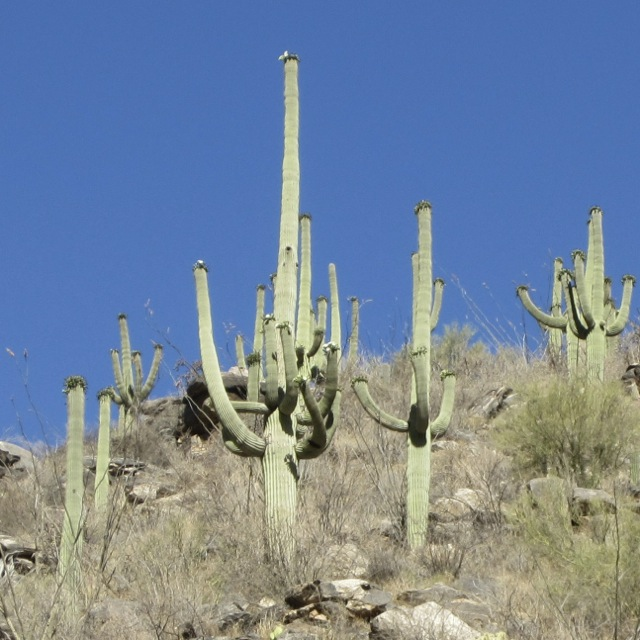
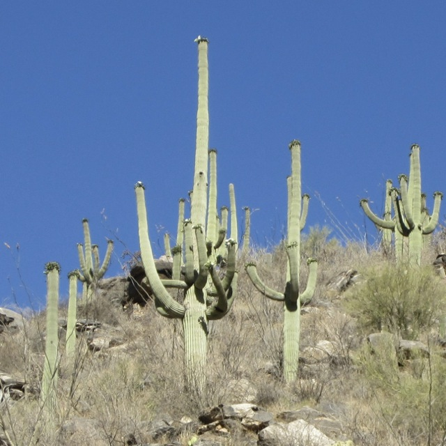

Megan M. Kiminki
(formerly Megan M. Bagley)
 

Astronomy Research
While at the University of Arizona, I studied how massive stars affect their surroundings. My PhD dissertation focused on the Carina Nebula, a giant star-forming region that is home to some of the most extreme stars in the Milky Way.
Check out some of my research highlights below or get the details from my publications.
Multiple Eruptions of Eta Carinae
The very massive star Eta Carinae erupted spectacularly in the 1840s, and nobody quite yet knows why. Through careful alignment and analysis of Hubble Space Telescope images, my collaborators and I measured blobs of gas hurtling outward from Eta Carinae at hundreds of thousands of miles per hour. We learned that over the last thousand years, Eta Carinae has erupted not just once, but three times!
Read more about our results in Physics Today or our UANews press release.
The dark clouds in this GIF were ejected from Eta Carinae in the mid-thirteenth century. Data are from Kiminki et al. (2016).
Massive Stars Across W3
For my Master's thesis, I identified and characterized massive stars in W3, a bright star-forming region on the edge of the Heart Nebula. I also developed an algorithm for subtracting spatially variable background contamination from stellar spectra.
Massive and intermediate-mass stars in W3, compared to molecular CO emission. Figure is from Kiminki et al. (2015).